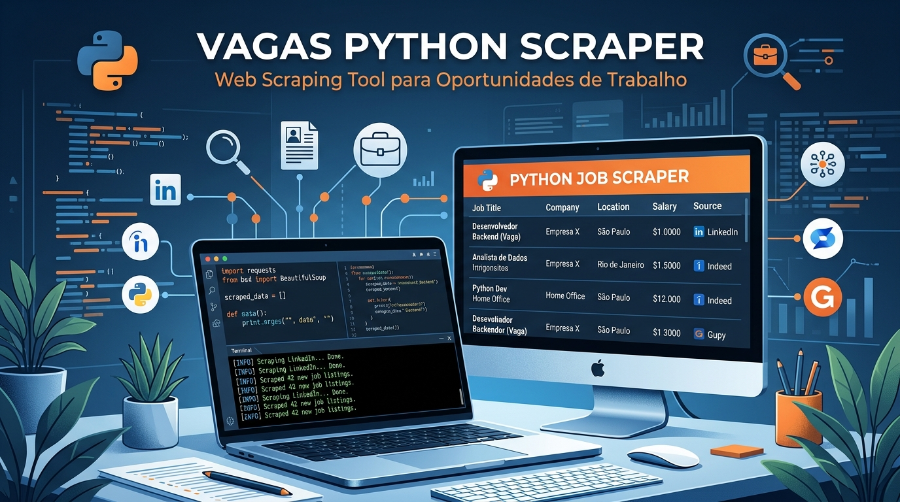
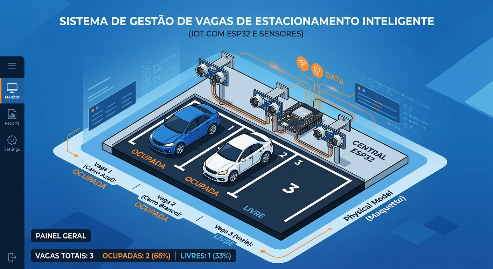
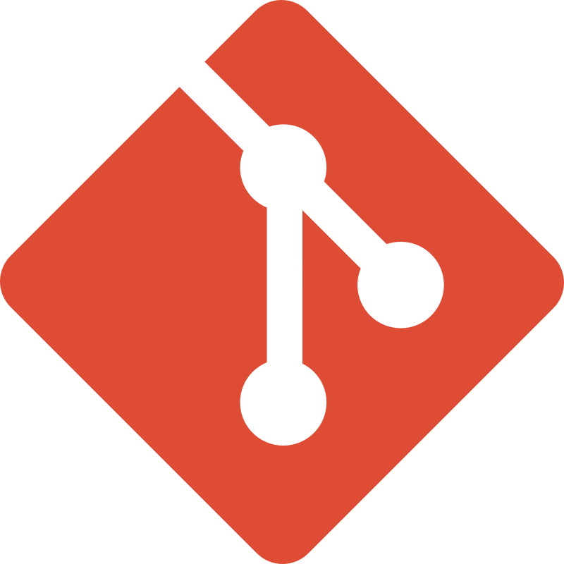

Busca vagas em diferentes plataformas, permite filtrar por palavras-chave e centraliza as oportunidades no Telegram. Inclui API, banco de dados e ferramentas para acompanhar e analisar vagas.
Criando soluções digitais inovadoras para problemas reais.
Construo os motores que fazem a tecnologia funcionar. Crio sistemas completos, escaláveis e seguros com Python e Java para sanar necessidades do mundo real.
Meus ProjetosProjetos

Sistema de busca de vagas de emprego

Sensor de Estacionamento
Painel web que recebe em tempo real os dados dos sensores ultrassônicos conectados ao ESP32 e atualiza a ocupação das vagas, mostrando quais estão livres e quais estão ocupadas.

NT Scraper
Coleta notícias de tecnologia de fontes como Hacker News e Tecnoblog, armazena e distribui os resultados em um canal do Telegram. A API e o webhook dão suporte à integração com o bot.
DG
Quem sou eu
Sou Denis Goes, um desenvolvedor de 19 anos, aluno SENAI e apaixonado por criar soluções reais. Construo sistemas completos, tenho orgulho de usar a tecnologia para resolver problemas comuns.
Tecnologias e Ferramentas





Contato
Vamos trabalhar juntos? Me mande uma mensagem!